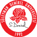

<ng-container>
    <mat-sidenav-container class="example-container">
        <mat-sidenav #snav opened="opened" mode="side" fixedTopGap="0" [fixedInViewport]="true">
            <mat-nav-list class="nav-list">
                <mat-toolbar color="primary">
                    <mat-toolbar-row>
                        Menü
                    </mat-toolbar-row>
                </mat-toolbar>
                <div *ngFor="let menu of Menus">
                    <a mat-list-item [routerLink]="[menu.Link]" [routerLinkActive]="['active']">
                        <mat-icon>{{menu.Icon}}</mat-icon> {{menu.Text}}
                    </a>
                    <mat-divider></mat-divider>
                </div>
            </mat-nav-list>
            <div style="bottom:0; position:absolute; width:100%; text-align:center;">
                <mat-divider></mat-divider>
                <a mat-list-item>
                        © 2018 SDÜ USKMYO
                </a>
            </div>
        </mat-sidenav>
        <mat-sidenav-content class="mat-sidenav-content-margin">
            <mat-toolbar color="primary">
                <mat-toolbar-row>
                    
                    <span class="toolbar-title">Süleyman Demirel Üniversitesi Uluborlu Selahattin Karasoy Meslek YüksekOkulu</span>
                </mat-toolbar-row>
            </mat-toolbar>
            <div class="container-fluid">
                <div class="content-container mat-elevation-z8">
                    <router-outlet></router-outlet>
                </div>
            </div>
        </mat-sidenav-content>
    </mat-sidenav-container>
</ng-container>